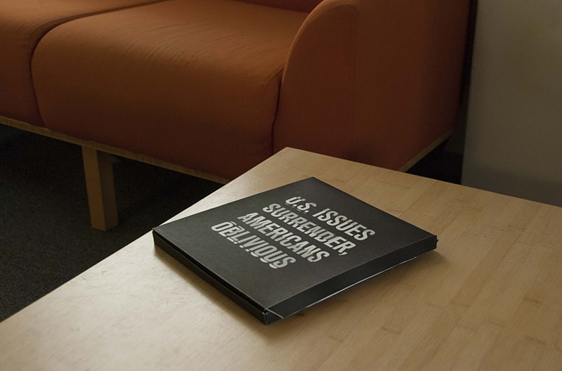
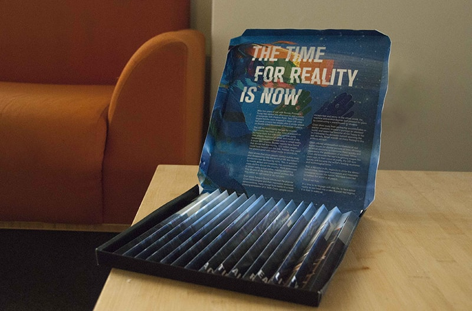
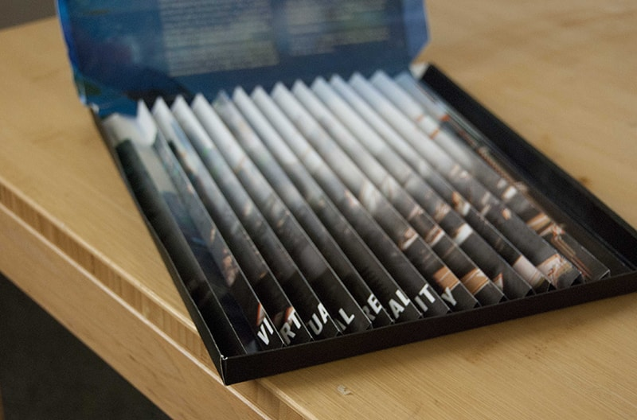
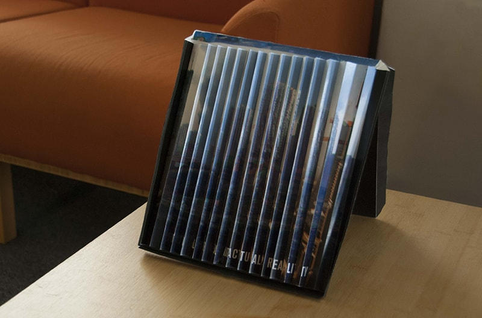

Final Lockup




Seeing what they have become used to in their own reality gives credibility to the message, and contrasting said image with real-world conditions prepares them for what they will face. It is call for them to come out of VR,

These opposing views of reality will be a revelation for the user. It reveals how they been stuck somewhere else, how what their image of the world is false, and how the country is shattered.